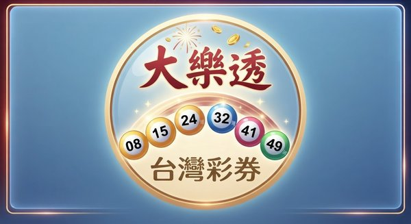

▍本期開獎號碼
第 103000049 期 開獎日期：103年6月18日
08
15
24
32
41
49
＋
03
下期頭獎累積獎金
NT$ 800,000,000
| 獎項 | 中獎注數 | 單注獎金 |
|---|---|---|
| 頭獎 | 0 | － |
| 貳獎 | 2 | 3,802,155 |
| 參獎 | 48 | 52,318 |
| 肆獎 | 1,206 | 20,000 |
| 伍獎 | 2,843 | 4,000 |
| 陸獎 | 19,552 | 1,000 |
| 柒獎 | 38,104 | 400 |
| 普獎 | 287,551 | 100 |
※ 本期頭獎從缺，獎金將累積至下期。
※ 中獎彩券自開獎日起３個月內兌領，逾期視同放棄。
※ 單注獎金超過２萬元者，須依法扣繳稅款。
※ 中獎彩券自開獎日起３個月內兌領，逾期視同放棄。
※ 單注獎金超過２萬元者，須依法扣繳稅款。
▍近期開獎紀錄
| 期別 | 開獎日 | 頭獎注數 |
|---|---|---|
| 103000049 | 06/18 | 0 |
| 103000048 | 06/14 | 0 |
| 103000047 | 06/11 | 1 |
| 103000046 | 06/07 | 0 |
| 103000045 | 06/04 | 0 |
［ 廣告版位 ］
